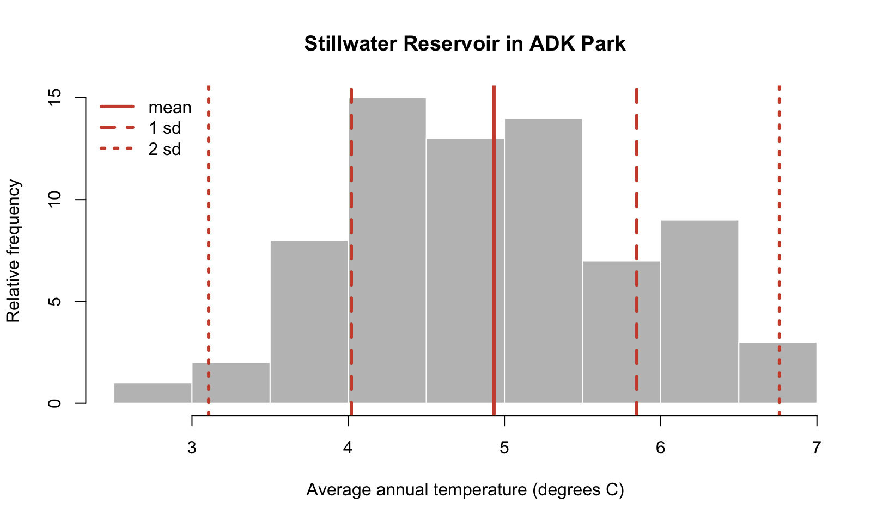
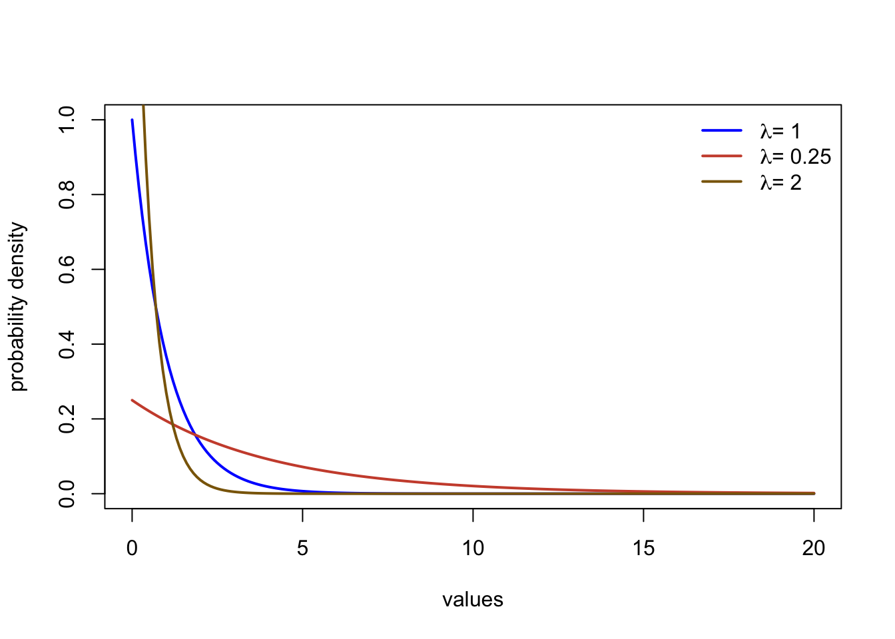

Chapter 3 Is this normal? Evaluating historical weather data to understand extremes, changes, and climate.
by Heather Kropp for ENVST 206: Introduction to Environmental Data Hamilton College
3.1 Learning objectives
- Work with weather data and summary statistics
- Use histograms to characterize data
- Probability distributions
- Characterize climate using a probability distribution
3.3 The problem. How weird was yesterday’s heatwave? Using long-term weather data to understand normals and climate.
You have probably heard the phrase the “new normal” used to describe warmer temperatures, heatwaves, flooding, and drought that is driven by climate change. This phrase is often used in association with the steadily increasing global mean temperature and higher variability in temperature and precipitation under climate change. In this activity, you will explore how the “normal” conditions are determined. First some terms: climate refers to the long term weather patterns for a place. It is summarized by averaging observations over many decades. Weather refers to the meteorological conditions over short periods (hourly, daily, annual).
On a global scale, the NASA Goddard Institute of Space Studies has been tracking daily land surface temperature anomalies since the 1950s on a global scale to track climate change. A calculation called an anomaly, is used to characterize the difference between an observed value and a mean or baseline value(Anomaly = Observed - Mean). Anomalies are often used to assess temperature and precipitation in a year compare to the typical climatic conditions.
The distribution of global annual temperature anomalies observed during each decade are shown in the graph below. A distribution portrays the frequency or rate of occurrence for different observed values. In the graph below, a higher white line and fill color indicates more observations for a particular temperature anomaly value. The x axis value of zero coincides with the mean land surface temperature in 1950. A value of one means the temperature is 1 \(^\circ\) C above the baseline/average. The decadal distributions of land surface air temperatures shown in the graph below help illustrate the increasing mean temperatures and the more frequent occurrence of warmer temperatures.
However, not all areas of the globe are changing uniformally. Some areas have experienced accelerated change. The Arctic is now warming four times faster than the rest of the globe (Rantanen et al. 2022). In contrast, other areas have experienced minimal change compared to the global average. In order to understand local changes in climate, scientists use long-term historical weather data with complete records (think daily temperature and precipitation for at least 5-8 continuous decades) to examine annual and decadal changes in weather. The average annual air temperature averages daily observations over a year and helps track if a year is warmer or cooler than previous years. The Mean Annual Air Temperature (MAAT or MAT) refers to the mean of many years of annual air temperature values (usually at least 20 years). Precipitation includes rainfall and frozen forms of precipitation like snow and sleet melted down to a liquid (expressed in units of depth of water, mm or inches). Precipitation amounts vary a lot day to day, but summing up the precipitation from every day over the year yields Annual Precipitation. Mean Annual Precipitation (MAP) refers to a long term average of annual precipitation over many years (at least 20 years). Since MAP and MAAT are taken over many years, they represent the general climate of an area. These two variables are often key determinants of the biome covering the land surface(types of vegetation and ecosystems). For example, warm areas with low annual precipitation are considered desert regions. An ecologist, Robert Whittaker, mapped out the biomes that result from different MAAT and MAP combinations across the globe.
3.3.1 Using summary summary statistics to summarize weather
Summary statistics help describe data and compare observations. The mean is a measure of central tendency of our data. This often means calculating the average of our data. You have probably calculated it at some point by adding all of you observations (x) and dividing by the total number of observations (n):
\[\frac{\sum_{i = 1}^{n}{x_i}}{n}\]
In statistics, there is careful phrasing around the mean versus average, and mean may be used more specifically for a type of statistical concept called a probability distribution (more on this soon!) or when the data more broadly represents a population. In R, the function mean() calls the function for calculating an average. We’ll discuss this more at a later point.
There are other ways to summarize the data. You can find the maximum using the max() function or the minimum using the min() function. You often will want to more than the typical value or the highest/lowest values in the data. Measures of the spread of the data are useful for understanding variation in the observations. Measures of spread like the standard deviation help capture how the data observations are spread out around the mean value. For example, the standard deviation of air temperatures in a year tells us about how much day to day variability there is around the annual average. The equation for calculating the standard deviation for a sample of data is:
\[\frac{\sum_{i = 1}^{n}{\sqrt{(x_i - \bar{x})^2}}}{n-1}\]
Another statistic includes the median. This is the value in the middle of the data (R: median). This means that 50% of the observations are below the number and 50% are above.
Often when you hear about record breaking temperatures in heat waves or cold snaps, these observations refer to a value of daily temperature values not previously observed in the weather record. Statistics can be used to describe how often we expect to observe these types of events or typical ranges of temperature in a day or year. Weather events that fall out of typical occurrences of conditions are often classified as extreme weather events. For example, NOAA defines extreme temperatures or rain events as a value that occurs less than 10% of the time. NOAA provides climate graphs for areas with long term weather records that compare weather to climatic normal. Daily data is compared to the historical record of daily temperature and cumulative precipitation (sum of precipitation for days in the year). Such observations help make predictions and decisions related to whether a year is on track to be wetter or drier than usual or warmer/colder.

3.4 The Data.
In this tutorial and your homework, you will analyze weather data to characterize climate and get familiar with summary statistics, distributions, and data tables with many observations in R. The data that you will work with includes long-term data collected by the National Oceanic and Atmospheric Administration (NOAA) at six weather stations around the United States. NOAA has been observing weather for decades including measurements such as wind, air temperature, and precipitation. Below is an image of NOAA observing stations both past and current:

The minimum and maximum daily air temperature and total precipitation are in the data. Air temperature is collected by a thermocouple in a special housing that prevents interference from wind and snow. Precipitation is measured using a bucket with a sensor that measures the amount of water coming in. In the winter, these buckets can be heated to measure liquid water in snow or sleet. The observations span decades. You will learn how to use R and basic statistics to summarize climate from long-term weather data in this tutorial.
3.5 Using packages in R
We have been learning to use the built in functions in R including mean and max. While working with these basic functions is useful, it can lead to a lot more coding. Packages add additional functions that are not located in the base functions in R. There are a total of 18,088 packages currently available on CRAN that expand the functions available in R. If you were to simultaneously use all of these packages and their functions loaded in R, it would take up a lot of space and too many functions would have the same name. This is why you should load only the packages needed to run the code in your script in an R session.
The first step in using a package, is to install it to your local computer using the install.packages function. You only need to do run this once for a project in RStudio Cloud. You will get a prompt asking what mirror you would like to download from. You may choose any mirror in the US. Let’s read in a package that helps with organizing data called dplyr.
Once the package is installed, you will need to load the package into your current session using the library function. You will run this every time you start a new R session.
3.5.1 Reading in data
You will read in data using the read.csv function. A csv file (comma separated values) is a text version of an excel spreadsheet where the values for each cell are included in the file and the designation of a new cell starts with a comma. You can always resave an .xlsx file as a .csv. You can save any excel or sheets file as a .csv file when you click save as. Let’s read in a file I’ve already formatted for you.
There is one critical argument in read.csv, the file path including the name of the file. A file path tells R where to find the file within the computer file system. You will be able to see the file in the Files tab. The file system for RStudio cloud will always start with Cloud. You can see the file system structure written out in the red circle:

All of the files for this project are on the virtual computer under the file path: /cloud/project. The file is actually saved in the /noaa_weather folder. If you click on the folder, you will see the file path update, and you will see two files.
The csv file is the one that you will want to read in. This means that you will read in the file using the entire file path as follows:
# read in data
# cloud is always lowercase
datW <- read.csv("/cloud/project/noaa_weather/weather_data.csv")You will see datW appear in your global environment when you run the script. If you click on the blue button, a preview will show you the column names, data type, and the first few rows of data in each column.
If you click on the name, datW, a viewer window will appear in the script window. Viewing a data frame allows you to scroll through the rows and columns. However, you cannot actively change or edit the data frame.
Information about the data is called metadata. The metadata provides key information about the data, such as the units. Note that I selected the metric option in downloading the data. All missing data fields are indicated with a NA in R formatting. Below is the description for each column name from NOAA:
Before you move on, average daily temperature is often more helpful to evaluate temperature than maximum and minimum. The average daily temperature is usually halfway between the minimum and maximum so you can calculate it from the NOAA data. We can calculate it as follows:
# calculate the average daily temperature
# This temperature will be halfway between the minimum and maximum temperature
datW$TAVE <- datW$TMIN + ((datW$TMAX-datW$TMIN)/2)Notice how you were able to type in a single calculation and it was applied to all rows of TMIN and TMAX in datW. For this calculation, I created a new column in datW called TAVE. Remember the convention for referring to a column in a data frame is always dataframe$column.
3.5.2 Subsetting
Also note that we have data from six sites with very different climates. You will want to describe annual patterns for each site separately. Otherwise you would be summarizing average conditions over six very different locations around the US, and that doesn’t offer a lot of meaningful interpretation.
Here, you want to subset data based on a condition. The use of relational operators allows you to identify data that meets a condition such as (temperature LESS THAN 8 \(^\circ\) C). Logical operators allow you to combine relational statements such as (temperature < 8 °C AND temperature > 0 °C ).
| Operator | Interpretation | Type |
|---|---|---|
== |
equal to | relational |
!= |
not equal to | relational |
> |
more than (not including) | relational |
>= |
more than or equal to | relational |
< |
less than (not including) | relational |
<= |
less than or equal to | relational |
& |
and | logical |
| |
or | logical |
A helpful function for finding out all of the station names is the unique function that gives all unique values without repeating them. You can refer to a single column in a data frame using the notation: data.frame$column.name:
[1] "SYRACUSE HANCOCK INTERNATIONAL AIRPORT, NY US" "STILLWATER RESERVOIR, NY US"
[3] "BARROW AIRPORT, AK US" "FARGO HECTOR INTERNATIONAL AIRPORT, ND US"
[5] "ABERDEEN, WA US" "PHOENIX AIRPORT, AZ US" You can subset to a single site by using the filter function in dplyr. dplyr allows you to use a type of syntax called a pipe. A pipe will chain functions and data frames together. The pipe is indicated with %>%. When a data frame is put before a pipe, any function run after the pipe automatically refers to columns in the data frame. This saves you from typing in data.frame$column base formatting. Using the filter function allows you to subset data based on a relational statement. Any criteria in which the statement is TRUE will be included in the output. Filter the data to only include Aberdeen observations and calculation the average maximum temperature:
# subset the data to a data frame with just Aberdeen
aberdeenDaily <- datW %>%
filter(NAME == "ABERDEEN, WA US")
# look at the mean maximum temperature for Aberdeen
mean(aberdeenDaily$TMAX)[1] NAYou get a NA value here. That’s because there is missing data in this data set. NA is a specification that indicates the data is missing. NA is handled differently in R and is neither a number nor a character. Luckily there is an argument in mean that allows us to ignore NAs in the calculation.
# look at the mean maximum temperature for Aberdeen
# with na.rm argument set to true to ingnore NA
mean(aberdeenDaily$TMAX, na.rm=TRUE)[1] 14.6133You will also want to calculate the standard deviation with the function sd. This measures the spread of the observations around the mean, and is in the same units as the mean.
[1] 5.757165Now you will see the daily maximum temperature in Aberdeen is 14.6 °C. Since this is the mean across many days over decades of observations, this value indicates the typical maximum daily temperature over a long time period.
3.6 Summary statistics and visualizing data distributions.
The above method of calculating means is not very efficient. In order to calculate mean annual temperature (MAT), we also must take the average of each annual average not the average across all days of observation. We need to calculate 71 years of averages for six locations, and that is way too much coding to do each calculation in its own line of code! You can use the summarise function to calculate means across an groups. In this example, NAME and YEAR need to be used as a grouping variable. A group indicates that each unique value in the group describes a homogeneous feature (e.g. site, year, name). The group_by function in dplyr can be used to specify a grouping variable for the sumarise function. summarise creates a new data frame with column labels for each group and any columns created in the function.
# get the mean, standard deviation across all sites and years
averageTemp <- datW %>% # all data will be in datW
group_by(NAME, YEAR) %>% # NAME and YEAR as groups
summarise(TAVE=mean(TAVE, na.rm=TRUE), # calculate average for each station x year
TAVE.sd = sd(TAVE, na.rm=TRUE)) # standard deviationIn order to calculate the Mean Annual Temperature (MAT), the annual average temperature for each location needs to be averaged across all years. This can be done with sumarise again:
#calculate the mean annual average temperature for all sites (MAT)
MAT <- averageTemp %>% # refer to averageTemp data frame
group_by(NAME) %>% # group by station name
summarise(MAT = mean(TAVE)) # calculate the mean for each stationThese average temperature values from decades of temperature can tell you about the overall climatic conditions of the different locations in the data. You can use any function in aggregate. For example, you can replace mean with max to find the annual average temperature value observed in the data.
Finally, we will want to explore an individual location in more detail. It will be helpful to create a new data frame that only has the annual average temperature for the location in the Adirondack Park (Stillwater Reservoir). We can create a new data frame by filtering the averageTemp data frame and assigning it a name:
# create a data frame for only Stillwater Reservoir MAT (located in Adirondack park)
adk <- averageTemp %>%
filter(NAME == "STILLWATER RESERVOIR, NY US") 3.6.1 Histograms
Summary statistics are helpful, but it is important to visualize the data. A graphical tool called a histogram can help visualize how frequently certain values are observed in the data. This is called the data distribution. A histogram shows the frequency of temperature observations in different bins. The start and end of a bin is called a break in R. The hist function generates a histogram.
#make a histogram for Syracuse
hist(adk$TAVE,#data
freq=TRUE, #show count as discrete number
main = "Stillwater Reservoir in ADK Park", #title of plot
xlab = "Average annual temperature (degrees C)", #x axis label
ylab="Relative frequency", # yaxis label
col="grey75", #colors for bars
border="white") #make the border of bars whiteYou can see that annual average temperature varies between 2-7 °C in at the Stillwater Reservoir. The distribution is also fairly symmetrical with very high and low temperature values occurring at similar rates and most observations in the middle of the data range.
To get a better idea of how the summary statistics describe the data, let’s take a closer look at the plot. I’ll add a red solid line for the mean and red dashed lines for the standard deviation from the mean. I’ll add a dotted line to mark the values that are within two standard deviations of the mean.

You can see that the mean is fairly close to the center of the distribution and the observations that occur most frequently are within one standard deviation of the mean. Most of the data is within two standard deviations of the mean. These properties are meaningful statistically, in the next section, you will learn about more formal, mathematical ways to describe data distributions.
3.7 Probability distributions
3.7.1 Normal distributions
The data distribution that we just viewed has a very particular shape. The temperature observations are most frequent around the mean and we rarely observe data 2 standard deviations from the mean. The distribution is also symmetrical. We can describe this occurrence of different values of data more formally with a probability distribution. Probability distributions use mathematical properties to describe distributions of data. Parameters help describe the shape of the data distribution. This temperature data follows a normal distribution. The normal distribution is very commonly used and relies on two parameters: the mean and standard deviation to describe the data distribution. Let’s take a look at a normal distribution assuming the mean and standard deviation parameters are equal to the ones observed in the Adirondack data:
The distribution describes the probability density, the relative occurrence of all values of data. The probability density is not a probability. The bell curve of the normal distribution follows a very specific shape. In fact, let’s look at a special case of the normal distribution to better understand the shape. Below is an image of the normal distribution where the mean is equal to zero and the standard deviation is equal to one. This is called a standard normal or a z distribution. Data can be converted to this scale using the calculation: (data - mean)/standard deviation

Probability distributions all have functions in R. Below, you can see the dnorm function is used to generate the probability density for a range of temperature values in the plot. Remember this probability density alone just gives us the overall shape and relative occurrence, but the density at any given value is not an actual probability. The arguments for dnorm include the values of the data (x) used to calculate the probability density, the mean, and the standard deviation. You can plot a normal distribution like the one above by making a sequence of numbers (seq) to draw the curve for. A plot will require basic, x and y data. You can always check the documentation of a function using the help() function. Simply run help with the name of a function to find the arguments and default settings in a function. Below is an example for dnorm:
We’ll learn more about plotting soon. For now here are the code basics to plot a normal distribution:
# make a sequence of temperature values
xseq <- seq(2,#starting number
8,#ending number
by=0.1)#increments for making numbers
# calculate normal distribution pd
xNorm <- dnorm(xseq,
mean = mean(adk$TAVE,na.rm=TRUE),
sd= sd(adk$TAVE,na.rm=TRUE) )
# make a plot
plot(xseq, # x data
xNorm, # y data
type="l",# make a line plot
xlab="Average Annual Temperature", # label x axis
ylab="Probability density") # label y axis
This distribution can be compared to the data observations by overlaying the two graphs:
You can now see the blue dashed line overlain on the histogram of Adirondack TAVE values. This is the normal distribution using the mean and standard deviation calculated from the data. You’ll notice the normal distribution does a good job of modeling our data. Sometimes it underestimates a data bin and other areas are overestimated, but overall it mirrors the distribution of our data. This means we can rely on properties of the normal to help describe our data statistically! We’ll learn a little more in the coming weeks about all of the functionality this offers.
3.8 Using the normal probability distribution
Let’s turn to daily data and think about what an abnormally warm day might entail. For this exercise, let’s look at daily values for Aberdeen, Washington using the aberdeenDaily data frame that you created earlier:
STATION NAME LATITUDE LONGITUDE ELEVATION DATE PRCP TMAX TMIN YEAR TAVE
1 USC00450008 ABERDEEN, WA US 46.9658 -123.8291 3 1950-01-01 5.3 5.0 -2.2 1950 1.40
2 USC00450008 ABERDEEN, WA US 46.9658 -123.8291 3 1950-01-02 9.4 5.0 -7.8 1950 -1.40
3 USC00450008 ABERDEEN, WA US 46.9658 -123.8291 3 1950-01-03 1.0 -2.2 -7.8 1950 -5.00
4 USC00450008 ABERDEEN, WA US 46.9658 -123.8291 3 1950-01-04 9.7 -2.8 -7.2 1950 -5.00
5 USC00450008 ABERDEEN, WA US 46.9658 -123.8291 3 1950-01-05 0.0 0.6 -3.9 1950 -1.65
6 USC00450008 ABERDEEN, WA US 46.9658 -123.8291 3 1950-01-06 22.1 5.6 -1.7 1950 1.95You can see that the daily values follow a normal distribution. We can use the normal distribution to calculate the probability of different ranges of daily temperature values.
When the normal distribution is integrated across a range of values, it yields a probability for the occurrence of the range of values. For those of you that haven’t had calculus, integrating is essentially taking the area under the curve between a range of numbers. In my graph below, you can see the red shading indicates the area below the value of zero on the curve. We have to keep in mind that the range of the normal distribution extends from -\(\infty\) to \(\infty\). Let’s start by taking a look at all values below freezing in the normal distribution for our Aberdeen weather data. Technically this is the probability of all temperatures below freezing from zero to -\(\infty\). Functionally, many of the very low temperatures would be impossible to observe on earth and the probability of observing values closer to -\(\infty\) will be minuscule. You’ll notice that I cut off the axis at -10 and 30 degrees C where the occurrence of values outside of this range is so low, it looks like zero.
R has a built in suite of functions for working with probability distributions. You can run the help command documentation for all functions related to the normal distribution. Run the documentation on dnorm to see them all:
R uses p to designate probability. In pnorm, a value in the data is the first argument (the next two arguments are always the mean and standard deviation for the normal). The output will be the probability of observing that value AND all values below it to -\(\infty\). Let’s calculate the probability of below freezing temperatures. Don’t forget that probabilities always range from 0 to 1. Integrating across the normal between values of -\(\infty\) to \(\infty\) to get a probability of 1 in the normal. Below we’ll just focus on all values below freezing:
#pnorm(value to evaluate at (note this will evaluate for all values and below),mean, standard deviation)
pnorm(0,
mean(aberdeenDaily$TAVE,na.rm=TRUE),
sd(aberdeenDaily$TAVE,na.rm=TRUE))[1] 0.01617285You can see temperatures below freezing are rare at this site and we only expect them to occur about 1.6% of the time. Sometimes it’s easier to think about probability as % occurrence by multiplying the probability x 100.
You can take advantage of the properties of the distribution and add and subtract areas under the curve to better tailor my ranges of numbers. For example, I might be interested in identifying how often a temperatures between 0-5 degrees occur. First you can find out the probability of all values at 5 degrees or below:
#pnrom with 5 gives me all probability (area of the curve) below 5
pnorm(5,
mean(aberdeenDaily$TAVE,na.rm=TRUE),
sd(aberdeenDaily$TAVE,na.rm=TRUE))[1] 0.1307616Next, you can subtract the probability for observing values below 0 from your first probability, and you will get the probability of temperatures in the range of 0-5.
#pnrom with 5 gives me all probability (area of the curve) below 5
pnorm(5,
mean(aberdeenDaily$TAVE,na.rm=TRUE),
sd(aberdeenDaily$TAVE,na.rm=TRUE)) - pnorm(0,
mean(aberdeenDaily$TAVE,na.rm=TRUE),
sd(aberdeenDaily$TAVE,na.rm=TRUE))[1] 0.1145887Now let’s evaluate the probability of high temperatures. Knowing that the entire distribution adds up to 1, you can find the probability for a data value and all values above it by subtracting the pnorm probability from 1. For example, let’s look at the probability of temperatures above 20 degrees C.
#pnrom of 20 gives me all probability (area of the curve) below 20
#subtracting from one leaves me with the area above 20
1 - pnorm(20,
mean(aberdeenDaily$TAVE,na.rm=TRUE),
sd(aberdeenDaily$TAVE,na.rm=TRUE))[1] 0.02685653There qnorm function will return the value associated with a probability. This is the value in which all values at or below the value are equal to that probability. Let’s use this to evaluate extreme weather events. Let’s assume everything that occurs with a probability of less than 10% of the time (either hot or cold so anything above 95% or anything below 5%) is unusual. Let’s examine the temperature value that would be considered unusually high in Aberdeen:
#qnorm gives me the value at which all values and below equal the probability in my argument
#Here I'm calculating the value of the 95th quantile or a probability of 0.95
qnorm(0.95,
mean(aberdeenDaily$TAVE,na.rm=TRUE),
sd(aberdeenDaily$TAVE,na.rm=TRUE))[1] 18.60274This means I expect 95% of the temperature observations to be below this value. Any temperature observations above this value will occur with a probability of 5%.
Note: Throughout all of my code examples, you’ll notice that I continued to copy and paste the same code for calculating the mean for site 1: mean(aberdeenDaily$TAVE,na.rm=TRUE). While I did this to help you remember what was going into the function, it gets confusing and messy in long functions. This is a perfect example of why assigning variables names for frequently used functions/calculations is helpful. As this course progresses, we’ll continue to work on creating clean code once you get more comfortable with R.
We can also take advantage of the normal distribution to examine whether the distribution of daily average temperature has changed in recent decades. Let’s look at the first 35 years of data (1950-1985) and the recent years (> 1985):
# subset before and equal to 1985
AberdeenPast <- aberdeenDaily %>%
filter(YEAR <= 1985)
# subset years greater than 1985
AberdeenRecent <- aberdeenDaily %>%
filter(YEAR > 1985)You can see that the mean is higher in recent decades, shifting the distribution. For example, let’s look at the probability of daily temperatures exceeding 18 degrees C in each distribution:
# probability of daily temeprature above 18 degrees in 1950- 1985
1-pnorm(18,mean(AberdeenPast$TAVE,na.rm=TRUE),
sd(AberdeenPast$TAVE,na.rm=TRUE))[1] 0.05969691# probability of daily temeprature above 18 degrees in 1986- 2021
1-pnorm(18,mean(AberdeenRecent$TAVE,na.rm=TRUE),
sd(AberdeenRecent$TAVE,na.rm=TRUE))[1] 0.06795978There is a small increase in probability of daily temperatures at or exceeding 18 degrees in recent decades.
3.9 Other distributions
This tutorial only addresses the basics of continuous probability density distributions. Discrete data follows slightly different probability rules and should be treated differently. There are many probability distributions, too many to cover all here. Each probability distribution describes different parameters and ranges of data. Let’s look at a few distributions common to environmental data:
Exponential
The exponential distribution describes data that has the most frequent observations at a value of zero, with a rapid non-linear decline in probability density. The distribution describes data between zero (including) and \(\infty\). There is a single parameter (the rate, \(\lambda\)). The functions dexp, pexp, and qexp can all be used to call the

Student’s t distribution
The Student’s t distribution is a symmetrical, bell shaped distribution similar to the normal distribution. The main difference is the t distribution has heavier tails. This means that more extreme values further from the center of the distribution occur a little more frequently than the normal. The main parameter is the degrees of freedom, often abbreviated with \(\nu\) or n. The distribution is typically centered at zero, but can be specified to be centered at a different value in R. You can refer to the function in R with dt, pt, and qt.
Gamma
The Gamma distribution describes data ranging from zero (including) to \(\infty\). The function involves two parameters, the shape (\(\alpha\)) and the rate (\(\beta\)). It can take on a range of forms including asymmetrical distributions and exponential type curves. The function in R ar dgamma, pgamma, and qgamma.
Note There are too many distributions to name. Wikipedia has great overviews of different probability density functions, but beware that I have found occasional mistakes such as in the ranges of x values that the function spans. Wolfram Alpha has great, accurate resources, but it can be a little dense and jump into more theory. You can take an entire class in probability (it’s so cool!), but this class will only cover the basics needed for environmental applications.
Great work! You just learned how to work with a lot of weather observations (>155,000)! Imagine trying to calculate 72 averages across 26,117 rows of data in Excel or Sheets. You just did that in a few lines of code! You also learned to use R to describe climate, summarize data, characterize rare events, and calculate a probability of occurrence. You will continue working on these problems throughout your homework to characterize climate and examine changes in temperature and precipitation in different regions of the United States.
3.10 Citations
NASA’s Scientific Visualization Studio. Shifting Distribution of Land Temperature Anomalies, 1951-2020. Accessed 2022. https://svs.gsfc.nasa.gov/4891
Rantanen, Mika, et al. “The Arctic has warmed nearly four times faster than the globe since 1979.” Communications Earth & Environment 3.1 (2022): 1-10.